m6A-Seq pipeline
1. Introduction
In this tutorial, we will show how to use deepEA (https://deepea.nwafu.edu.cn or http://39.101.176.205:4006) to perform comprehensive m6A sequencing data analysis (take maize m6A-seq as an example). The m6A -immunoprecipitated (IP) and input (non-IP) samples with two biological replicates were extracted from the 14-day-old seedlings of maize (Zea mays L.) inbred line B73, and then sequenced with high-throughput sequencing technology. The SRA accessions of four datasets are listed in the following table. The More information regarding these maize m6A sequencing datasets is available in the reference (Luo et al., 2020).
| Samples | Experiments | Replicates |
|---|---|---|
| SRR8383013 | IP | Replicate 1 |
| SRR8383014 | IP | Replicate 2 |
| SRR8383017 | input | Replicate 1 |
| SRR8383018 | input | Replicate 2 |
2. Download reference genome and annotation
Before analyzing m6A sequencing data, we firstly use the function Obtain Genome Sequences and Annotation in Data Preparation module to download Zea mays B73 reference genome sequences and GTF annotation, the following two screenshots shows details about how to execute this step:
2.1: download Zea mays reference genome sequences in FASTA format
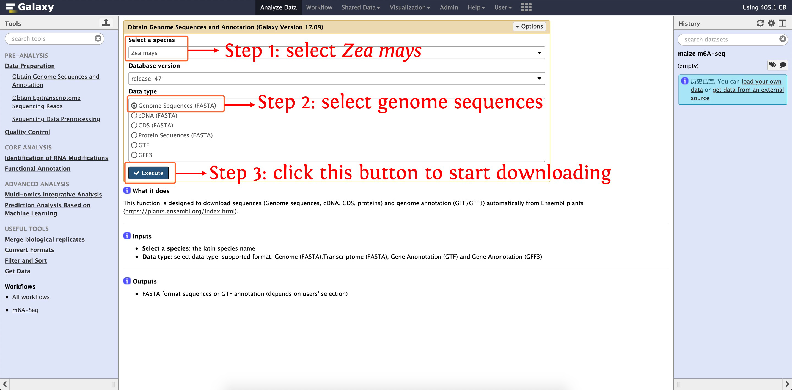
2.2: download Zea mays genome annotation file in GTF format
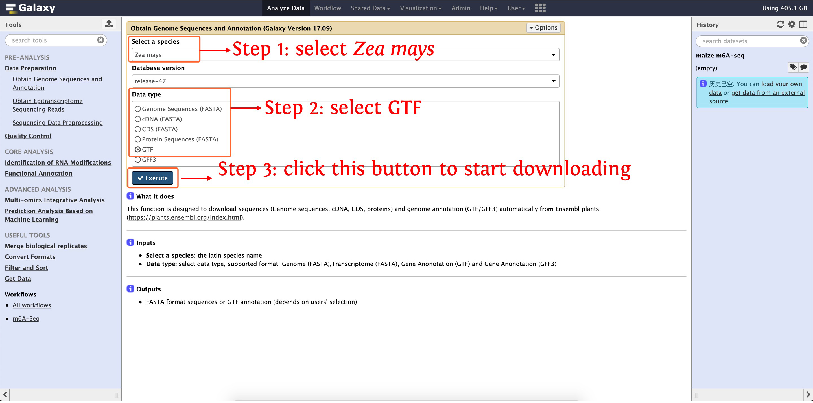
After that, reference genome sequences (named as zea_mays_release-47_Genome.txt) and annotation (named as zea_mays_release-47_GTF.txt) will be listed in your History Panel.
3. Download raw m6A sequencing reads
After finishing downloading Zea mays B73 reference genome sequences and annotation, we start to download raw m6A sequencing reads from NCBI SRA's database, this process can be finished by the function Obtain Epitranscriptome Sequencing Reads in Data Preparation module. Please see the following screenshots for details:
3.1: download IP sample for biological replicate 1 (SRR8383013)
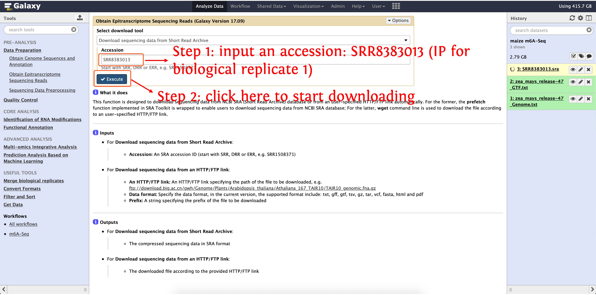
Then download SRR8383014, SRR8383017 and SRR8383018 as the above picture shows, after that, four raw m6A sequencing reads named as SRR8383013.sra, SRR8383014.sra, SRR8383017.sra, SRR8383018.sra will be listed in your History Panel, respectively.
4. Convert raw reads from SRA to FASTQ format
Here, let's convert raw m6A sequencing reads from SRA to FASTQ format by the function Sequencing Data Preprocessing in Data Preparation module, please see the following screenshots for details:
4.1: process SRR8383013.sra
This step will cost ~12 minutes 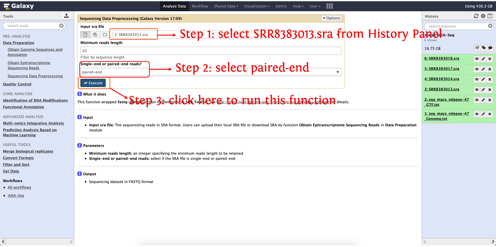
Then convert SRR8383014.sra (~26 minutes), SRR8383017.sra (~24 minutes) and SRR8383018.sra (~23 minutes) to FASTQ as the above picture shows. For each SRA accession, two FASTQ format files (forward reads and reverse reads) will be generated as this experiment is paired-end sequencing.
5. Trim raw m6A sequencing reads
Before align m6A sequencing reads to genome, trim low-quality reads is necessary in all NGS (Next Generation Sequencing) analyses as which may cause incorrect mapping of reads to a reference genome, and even result in incorrect identification of RNA modifications. deepEA provided the function Assess Reads Quality in Quality Control module to filter raw reads to clean reads, please see the following screenshots for details:
5.1: trim SRR8383013
This step will cost ~16 minutes 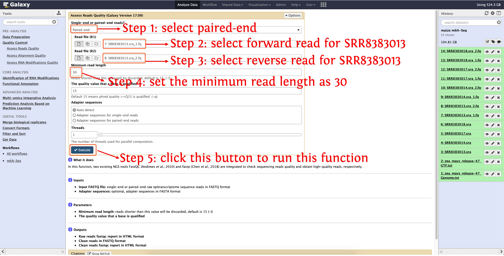
Then trim SRR8383014, SRR8383017 and SRR8383018 as the above picture show. After that, three files will be output for each SRA accession, please see the following screenshot for detail:
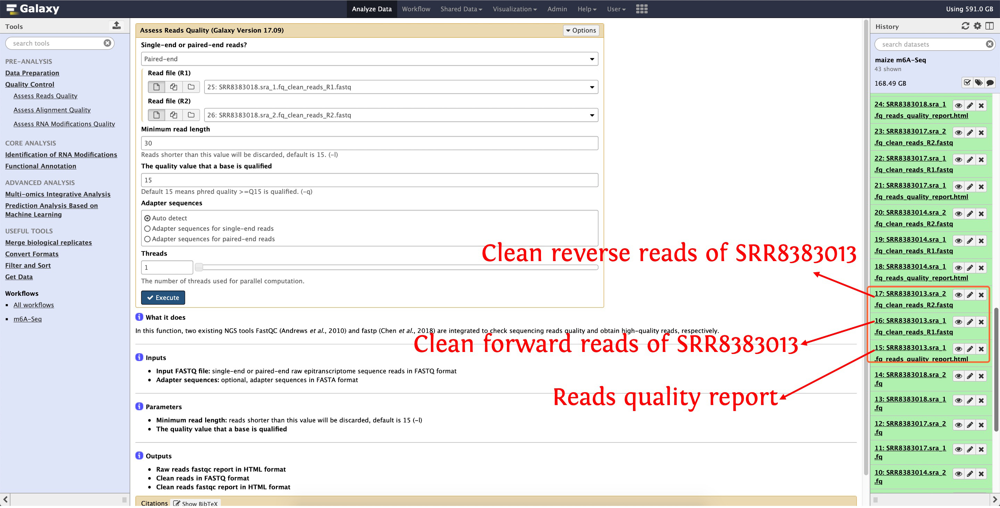
6. Align clean reads to reference genome
Here, we start to align clean reads to reference genome with HISAT2 provided in module Identification of RNA Modifications, see the following screenshots for details:
6.1: align SRR8383013
This step will cost ~48 minutes 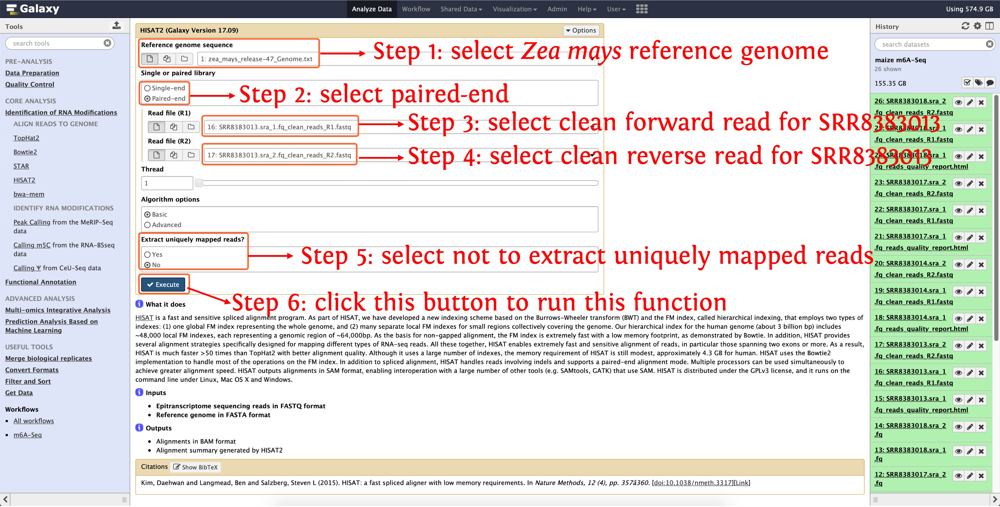
Then align clean reads of SRR8383014, SRR8383017 and SRR8383018 to reference genome as the above picture shows, after that, reads-genome alignments in BAM format and alignment summary will be generated, see the following screenshot for details: 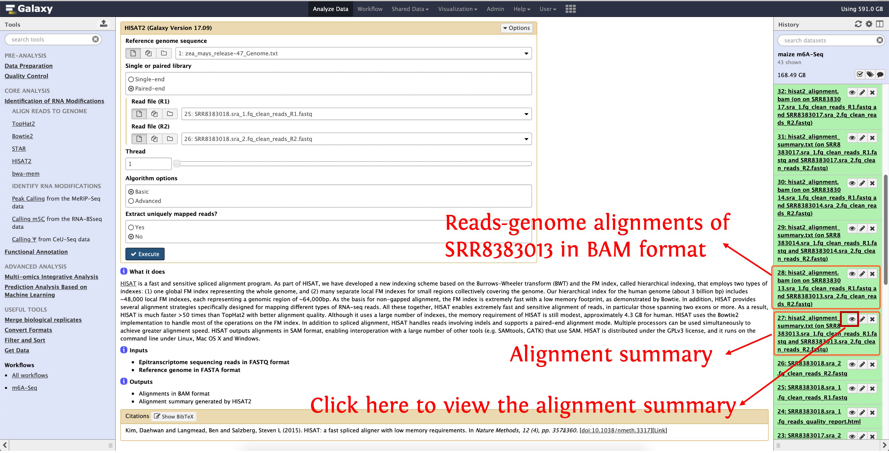
7. Identify m6A enriched peaks
After finishing aligning reads to genome, let's start to call m6A enriched peaks with macs2, the following screenshots show details about parameter settings:
7.1: call m6A peaks for biological replicate 1
This step will cost ~8 minutes 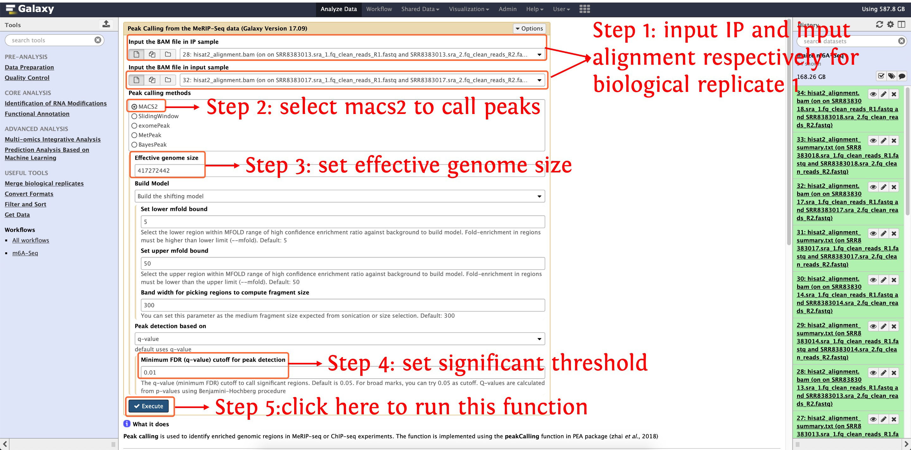
This step will generate ~16,400 peaks for biological replicate 1
7.2: call m6A peaks for biological replicate 2
This step will cost ~7 minutes 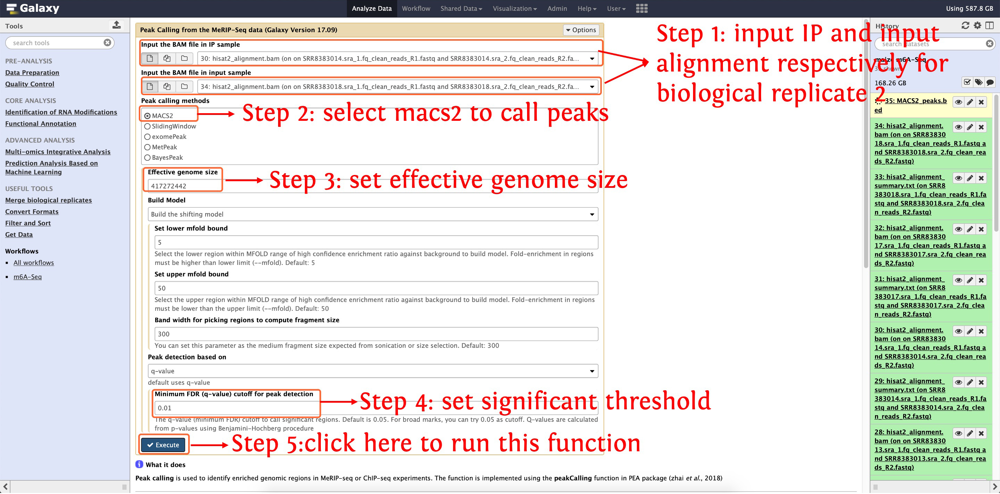
This step will generate ~16,100 peaks for biological replicate 2
7.3: obtain consistent peaks between two biological replicates
After finishing peak calling for two replicates, deepEA also provided a function Merge two biological replicates to obtain consistent peaks between two biological replicates, see the following screenshots for details:
This step will cost ~2 seconds 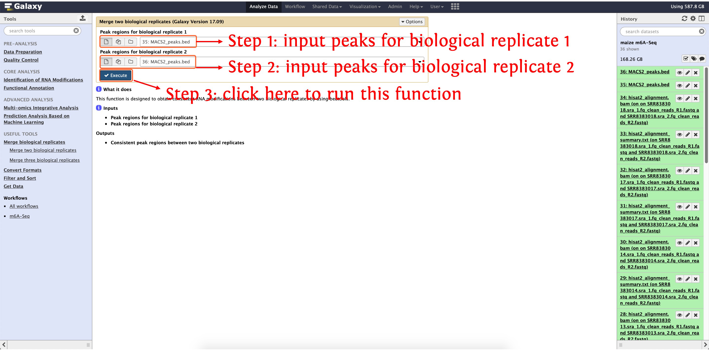
Then the consistent peaks named as intersect.bed (about ~14,000 consistent peaks) will be shown in your History Panel.
8. Functional annotation of m6A
8.1 m6A distribution
The distribution of m6A in the genome and transcriptome can be visualized by the function RNA Modification Distribution in Functional Annotation module, see the following screenshot for detail:
This step will cost ~5 minutes 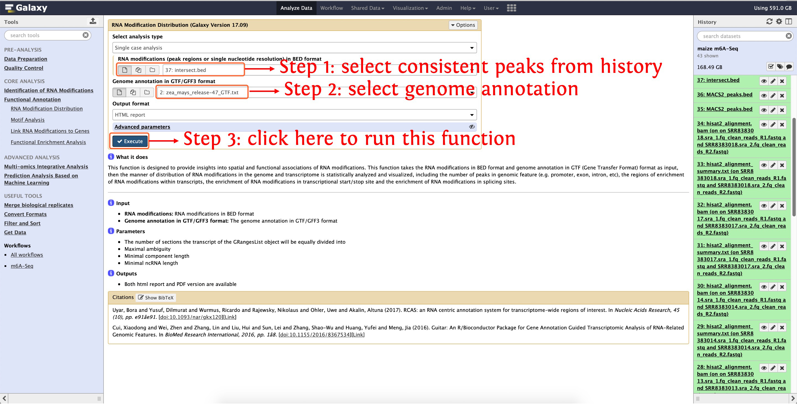
Then an interactively HTML will be generated, please see here to preview this results
8.2 Link m6A modifications with genes
This step will cost ~2 minutes 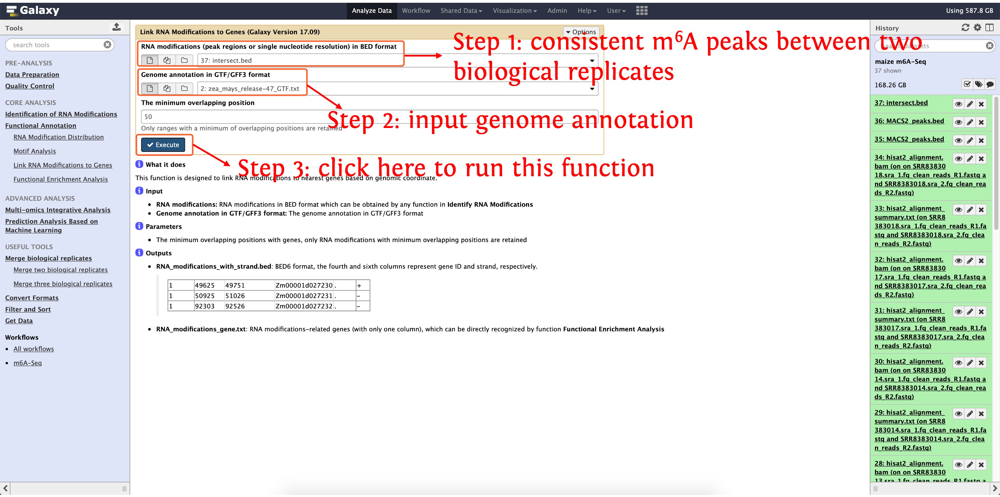
This output for this function are shown in the following the screenshot 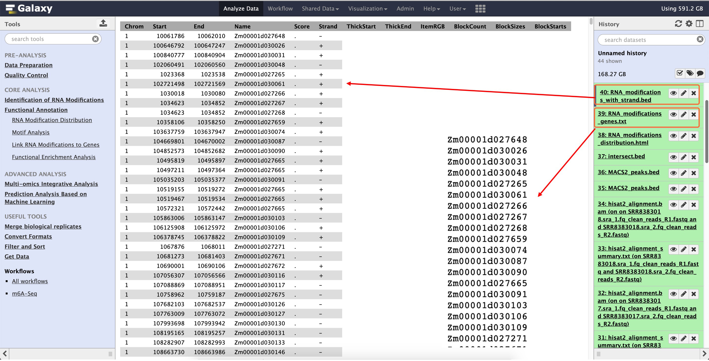
8.3 De-novo motif discovery
This following screenshot shows how to use homer to perform de-novo motif discovery
This step will cost ~6 minutes 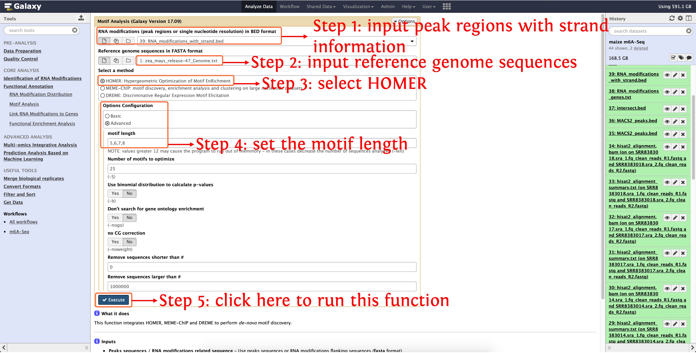
Then an HTML document will be generated, please click here to preview this results
8.4 GO functional enrichment analysis
deepEA provided the function Functional Enrichment Analysis to perform GO enrichment analysis, see the following screenshot for detail:
This step will cost ~1 minute 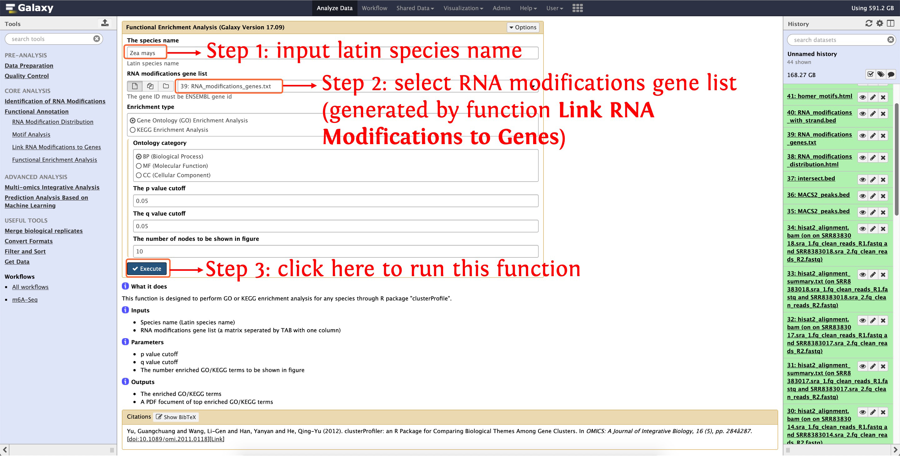
Then a figure in PDF format and a TAB separated matrix will be generated, please click here for details.
9. Multi-omics integrative analysis
To run this module, you have to download test data provided by deepEA, and then upload the data in directory test_data/Multi-omics
Integrative Analysis/ to deepEA server. If you are not sure how to upload local data into deepEA server, please see here for details. Then you can run the function Integrative Analysis of Three Omics Data Sets in Multi-omics Integrative Analysis module as the following screenshot shows:
This step will cost ~6 seconds 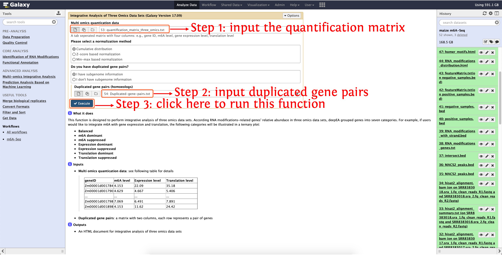
Then an interactively HTML document will be output, click here to preview this results.
10. Build an m6A predictor based on machine learning
The following four steps shows us how to use Prediction Analysis Based on Machine Learning module to build an m6A predictor and perform cross-validation experiments.
10.1: generate positive and negative samples for m6A predictor construction
The function Sample Generation can be used to generate positive and negative samples.
This step will cost ~5 hours, please wait patiently 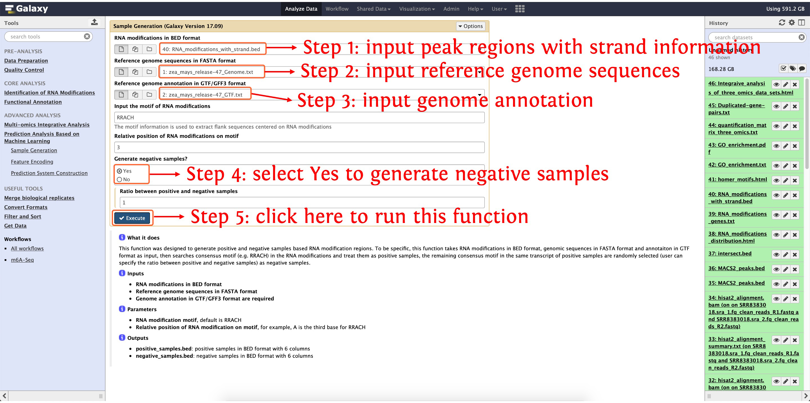
10.2: encoding positive samples by function Feature Encoding
This step will cost ~13 minutes 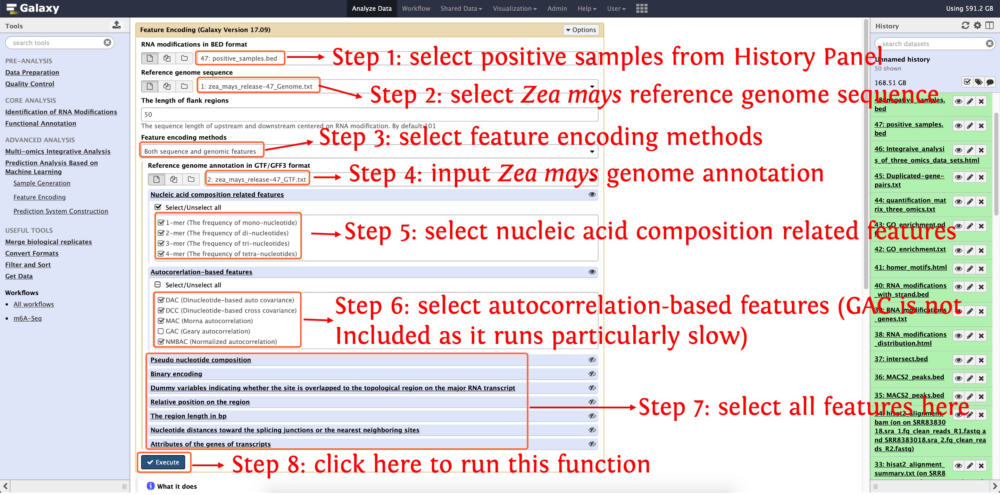
10.3: encoding negative samples by function Feature Encoding
This step will cost ~13 minutes 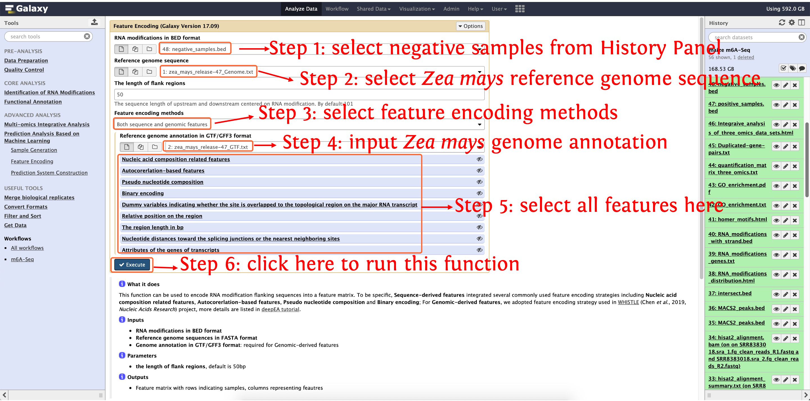
10.4: m6A predictor construction and evaluation
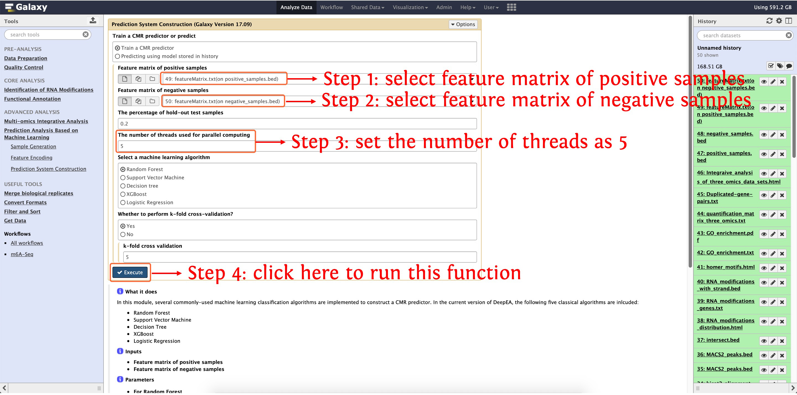
After finishing predictor construction and evaluation, three documents will be output, please see the following screenshot: 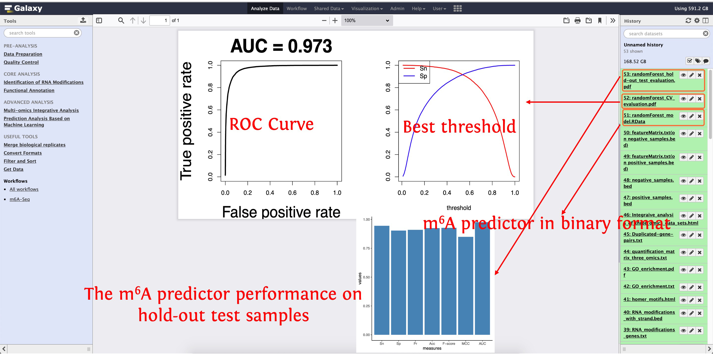
11. Predict candidate m6A
After building an m6A predictor, we can use the predictor to prioritize candidate m6 modifications, to do this, you have to prepare a file in BED format, see the following table:
| Chr | Start | End | GeneID | NA | Strand |
|---|---|---|---|---|---|
| 1 | 49625 | 49751 | Zm00001d027230 | . | + |
| 1 | 50925 | 51026 | Zm00001d027231 | . | - |
| 1 | 92303 | 92526 | Zm00001d027232 | . | - |
Then upload this file into deepEA server and run the function Sample Generation in Prediction Analysis Based on Machine Learning module as the following screenshot shows:
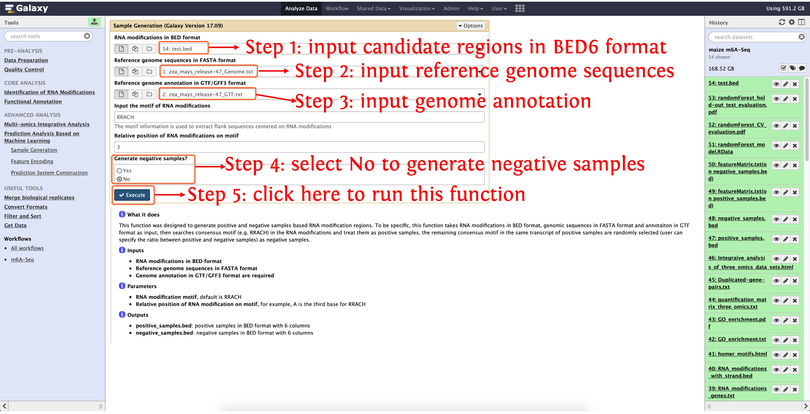
Then encoding the candidate samples using the same feature encoding methods as m6A predictor construction:
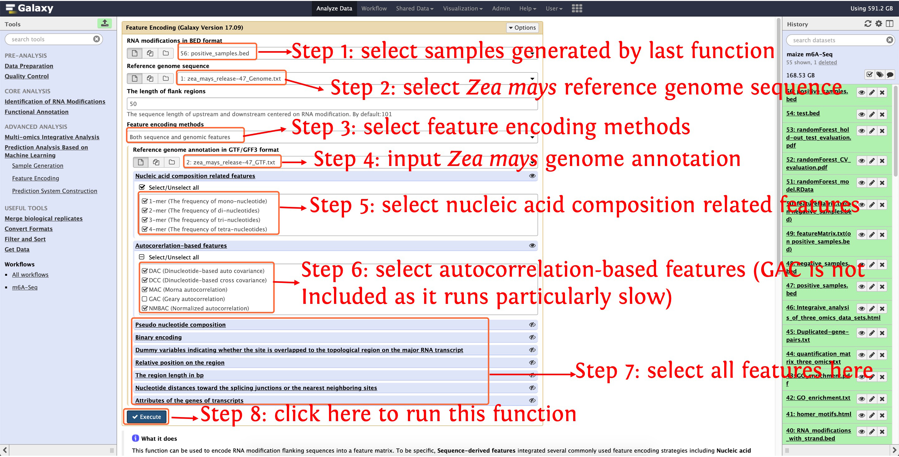
After encoding the candidate samples, we can predict the candidate m6A: 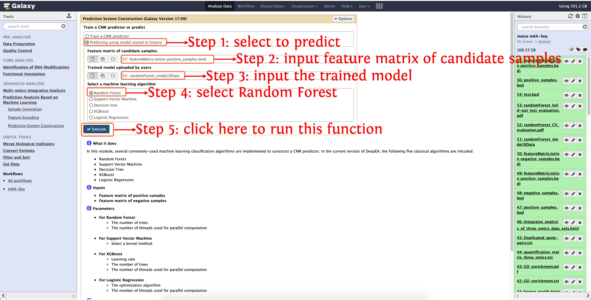